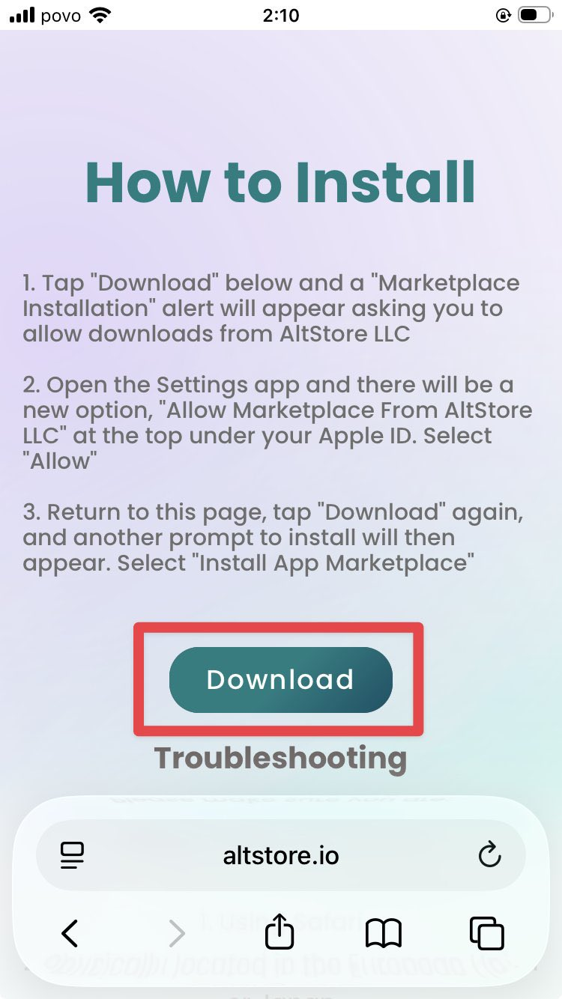

AltStore PALのインストール
まずはAltStore PALをiPhoneにインストールします。

1
AltStore PALのサイトにアクセス
iPhoneのSafariでaltstore.ioを開き、Downloadsセクションまでスクロールします。
2
Downloadボタンをタップ
緑色の「Download」ボタンをタップして、AltStore PALのインストールを開始します。
3
設定アプリで許可
設定アプリを開き、最上部（Apple IDのすぐ下）に表示される「AltStore LLCからのMarketplaceを許可」をタップして「許可」を選択します。
4
インストールを完了
再びSafariに戻り、もう一度「Download」をタップします。表示される確認画面で「App Marketplaceをインストール」を選択して完了です。